Personajes
Precuelas
Obi-Wan Kenobi
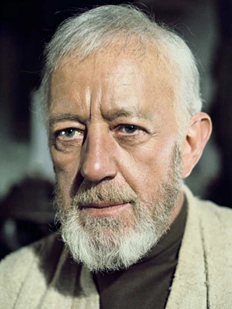Obi-Wan Kenobi es un personaje ficticio cuya presencia en la saga cinematográfica ha dejado una marca indeleble. Presente en múltiples episodios de la franquicia, Kenobi es conocido por ser un maestro sabio y valiente en un universo lleno de desafíos galácticos. Como miembro destacado de la orden Jedi, Kenobi se destaca por su habilidad en la Fuerza y su destreza en el manejo del sable de luz.
A lo largo de la narrativa, Kenobi juega un papel central en la lucha entre el lado luminoso y el lado oscuro de la Fuerza. Su compromiso con los valores Jedi, incluida la defensa de la paz y la justicia, lo convierte en una figura fundamental en la trama. Como mentor, guía a jóvenes aprendices y desempeña un papel crucial en la formación de nuevos Jedi.
La historia de Obi-Wan Kenobi abarca diversas eras dentro del universo de Star Wars, proporcionando continuidad y profundidad a la narrativa general. Desde su papel en las trilogías originales hasta su participación en las precuelas, Kenobi experimenta un desarrollo significativo, enfrentándose a desafíos personales y combatiendo las crecientes amenazas galácticas.
Su contribución en momentos clave, como la defensa en la Batalla de Geonosis y la confrontación con Sith, resalta su coraje y habilidades de combate. Además, su conexión con la Fuerza le permite realizar hazañas extraordinarias, estableciendo un vínculo místico con el tejido mismo del universo de Star Wars.
Kenobi no solo es un guerrero habilidoso, sino también un símbolo de sabiduría y resistencia en medio del caos. Su presencia es un faro de esperanza para aquellos que luchan contra las fuerzas oscuras, y su legado perdura a medida que las nuevas generaciones de héroes se levantan para enfrentar desafíos similares.
En resumen, Obi-Wan Kenobi es un personaje esencial en la epopeya galáctica de Star Wars, destacando por su valentía, compromiso con la justicia y su papel fundamental en la lucha contra las fuerzas del mal. Su historia continua sirve como un pilar en la construcción del vasto universo de Star Wars, conectando eras y proporcionando una narrativa rica y compleja.
Anakin Skywalker
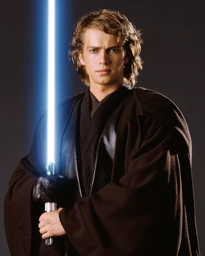Anakin Skywalker es un personaje crucial en la saga de Star Wars, cuyo viaje dramático abarca desde sus humildes comienzos en Tatooine hasta convertirse en el icónico Darth Vader. Inicialmente, Anakin es un joven esclavo con habilidades excepcionales en la Fuerza, descubierto por el Maestro Jedi Qui-Gon Jinn. Su ingreso en la Orden Jedi desencadena eventos que lo llevan al centro de la lucha entre el bien y el mal.
Con un talento innato para la pilotaje y la Fuerza, Anakin también es impulsado por sus propias luchas internas y miedos. Su relación con Padmé Amidala se convierte en un elemento clave de su historia, mostrando tanto su capacidad para el amor como su vulnerabilidad a las fuerzas oscuras. A medida que se desarrolla, sus conexiones emocionales y la manipulación del malévolo Darth Sidious lo arrastran hacia el lado oscuro.
La transformación de Anakin en Darth Vader es un momento trascendental en la trama, marcando el surgimiento del icónico villano de la galaxia. Su lealtad al Emperador y su participación en la ejecución de la Orden 66, que lleva a la aniquilación de los Jedi, son eventos que sellan su destino. La trilogía original explora su redención a través de la influencia de su hijo, Luke Skywalker, culminando en su sacrificio final para salvarlo.
El arco de Anakin Skywalker es un elemento central que conecta las trilogías, mostrando las complejidades de la naturaleza humana y cómo las decisiones pueden alterar el curso de la historia. Su legado como el Elegido y su caída en la oscuridad lo convierten en uno de los personajes más fascinantes de la saga.
En resumen, Anakin Skywalker es un personaje esencial en Star Wars, cuya historia abarca la lucha entre la luz y la oscuridad. Desde sus humildes orígenes hasta convertirse en el temido Darth Vader y, finalmente, su redención, Anakin añade profundidad y complejidad a la narrativa de la galaxia muy, muy lejana.
Padme Amidala
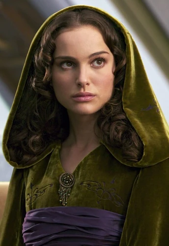Padmé Amidala, también conocida como la Reina Padmé Amidala o la Senadora Padmé Amidala, es un personaje central en la saga de Star Wars. Desde su introducción en "The Phantom Menace" hasta su impactante destino en "Revenge of the Sith", Padmé es una figura valiente y comprometida en la lucha por la libertad y la justicia en la galaxia.
Desde el principio, Padmé muestra un liderazgo excepcional como la joven Reina de Naboo. Su astucia y determinación la llevan a aliarse con los Jedi y, en particular, con Qui-Gon Jinn y Obi-Wan Kenobi, para resistir la invasión de su planeta. Tras su reinado, Padmé se convierte en Senadora, luchando por la paz y la justicia en el Senado Galáctico.
A lo largo de las precuelas, la relación de Padmé con Anakin Skywalker se desarrolla en medio de la creciente amenaza de la guerra. Su amor prohibido con Anakin y el secreto de su matrimonio, debido a las restricciones impuestas a los Jedi, añaden capas emocionales a la historia. Padmé representa la conexión entre la política galáctica y la trama personal, mostrando la intersección entre el romance y la guerra.
La maternidad de Padmé se revela en "Revenge of the Sith", donde enfrenta no solo la creciente oscuridad en Anakin sino también la amenaza del Imperio Galáctico. Su trágico destino, que resulta en su muerte al dar a luz a los gemelos Luke y Leia, es un momento conmovedor y simbólico en la saga.
Padmé Amidala se destaca como un personaje femenino fuerte y resiliente en Star Wars. Su papel trasciende las limitaciones impuestas por la política y las guerras galácticas, destacando la importancia de la diplomacia y la valentía en la lucha contra la opresión. Su legado perdura a través de sus hijos y su participación en eventos clave, consolidando su lugar en la rica mitología de Star Wars.
Trilogía original
Luke Skywalker
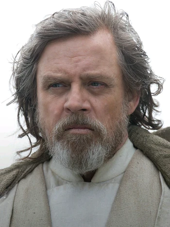Luke Skywalker, el héroe central de la trilogía original de Star Wars, es un personaje cuyo viaje de granjero en Tatooine a Caballero Jedi ha dejado una marca indeleble en la cultura popular. Interpretado por Mark Hamill, Luke personifica el arquetipo del héroe destinado a enfrentarse al mal y restaurar la paz en la galaxia.
En "A New Hope", Luke comienza como un joven granjero con sueños más grandes que la vida. Después de descubrir su conexión con la Fuerza y ser entrenado por Obi-Wan Kenobi, se convierte en un piloto habilidoso y desempeña un papel crucial en la destrucción de la Estrella de la Muerte.
Su viaje continúa en "The Empire Strikes Back", donde enfrenta desafíos mayores y descubre la impactante verdad sobre su parentesco con Darth Vader. La película explora su entrenamiento con Yoda y su lucha con el lado oscuro mientras busca salvar a sus amigos de las garras del Imperio.
En "Return of the Jedi", Luke alcanza la madurez y enfrenta su destino al confrontar a su padre, Darth Vader, y al Emperador Palpatine. Su rechazo del lado oscuro y su compasión por su padre ilustran la redención y la victoria de la luz sobre la oscuridad. Luke se convierte en el último Jedi y juega un papel fundamental en la derrota del Imperio.
El arco de Luke es una exploración clásica del héroe que supera desafíos personales y prueba su valentía en medio de la adversidad. Su evolución desde el joven ingenuo hasta el líder heroico simboliza la lucha eterna entre el bien y el mal en el universo de Star Wars.
La trilogía original no solo establece a Luke como un ícono de la cultura pop, sino que también sirve como la base de su legado en las secuelas. En "The Last Jedi" y "The Rise of Skywalker", su papel como mentor y figura inspiradora continúa, añadiendo capas adicionales a su impacto en la galaxia.
En resumen, Luke Skywalker es un personaje esencial en la mitología de Star Wars. Su viaje épico, lleno de heroísmo y autodescubrimiento, ha resonado con generaciones de fanáticos y ha contribuido a hacer de Star Wars una saga inolvidable.
Leia Organa
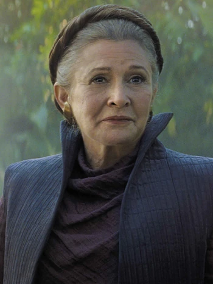Leia Organa, interpretada por la inolvidable Carrie Fisher, es una figura central en la trilogía original de Star Wars. Desde su presentación en "A New Hope", Leia es una líder valiente y una defensora incansable de la causa rebelde.
Intrépida desde el principio, Leia es una princesa con una determinación feroz. Su captura por parte de Darth Vader y su papel en la destrucción de la Estrella de la Muerte en "A New Hope" establecen su posición como una figura clave en la lucha contra el Imperio Galáctico.
En "The Empire Strikes Back", Leia demuestra su resistencia y liderazgo mientras la Alianza Rebelde enfrenta desafíos cada vez mayores. Su papel se expande más allá de ser la princesa en apuros, revelando su habilidad con la estrategia militar y su conexión con la Fuerza.
"Return of the Jedi" destaca la fuerza de Leia al rescatar a Han Solo y participar activamente en la batalla contra el Imperio. Además, la revelación de su parentesco con Luke Skywalker y Darth Vader añade complejidad a su personaje.
La fortaleza de Leia no se limita a las películas originales. En las secuelas, particularmente en "The Force Awakens" y "The Last Jedi", Leia se convierte en una general respetada, liderando la Resistencia contra la Primera Orden. Su papel como madre y líder inspira a una nueva generación de héroes.
Carrie Fisher aportó humor y humanidad al papel de Leia, convirtiéndola en un ícono cultural. La princesa convertida en líder militar destaca la evolución de su personaje, que trasciende los estereotipos tradicionales del género.
Leia Organa es más que una princesa; es una líder, una guerrera y un símbolo de resistencia en la galaxia. Su legado perdura no solo en la historia de Star Wars, sino también como un modelo de fuerza, inteligencia y valentía para generaciones de espectadores.
Han Solo
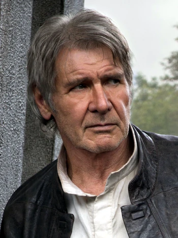Han Solo, interpretado magistralmente por Harrison Ford, es un personaje emblemático en la trilogía original de Star Wars. Desde su presentación en "A New Hope", Han personifica el arquetipo del contrabandista astuto y el antihéroe encantador.
En el inicio, Han es un contrabandista egocéntrico motivado por la recompensa. Su participación en la misión para rescatar a la princesa Leia desencadena su transformación de individuo autocentrado a un valiente héroe. Su lealtad a Luke Skywalker y Leia, así como su habilidad como piloto del Halcón Milenario, lo convierten en una pieza clave en la lucha contra el Imperio.
"The Empire Strikes Back" profundiza en la complejidad de Han. Su relación con Leia se desarrolla, mostrando su vulnerabilidad y el crecimiento de su conexión emocional. Capturado por Boba Fett, Han sufre en manos de Jabba the Hutt, destacando su valentía y tenacidad.
En "Return of the Jedi", Han demuestra su valentía en la Batalla de Endor y su contribución al plan para destruir la segunda Estrella de la Muerte. Su redención y reconciliación con Leia añaden una capa emocional a su arco, mostrando su evolución de cínico a héroe.
La trilogía original establece a Han Solo como el contrapunto pragmático a las fuerzas místicas y heroicas. Su papel se expande en las secuelas, especialmente en "The Force Awakens", donde se presenta como un mentor y figura paternal para nuevos personajes.
Han Solo es más que un contrabandista con encanto; es un personaje complejo con profundidad y humanidad. Su carisma y humor, combinados con su coraje y lealtad, lo convierten en un favorito de los fanáticos y en un elemento esencial en la mitología de Star Wars. La trilogía original establece su legado como un héroe renuente, dejando una impresión duradera en la galaxia muy, muy lejana.
Chewbacca
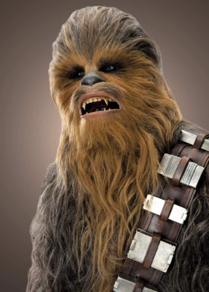Chewbacca, el leal compañero wookiee, es un personaje querido y distintivo en la trilogía original de Star Wars. Interpretado por Peter Mayhew, Chewbacca es el copiloto del Halcón Milenario y el fiel amigo de Han Solo.
Como miembro de la especie wookiee, Chewbacca es conocido por su fuerza sobresaliente y su habilidad como piloto y guerrero. Su lealtad a Han Solo se manifiesta en su participación en las misiones más peligrosas y su disposición a arriesgar su vida por sus amigos.
Aunque Chewbacca no habla un idioma humano, sus expresiones y gruñidos comunican sus emociones y pensamientos de manera efectiva. Su vínculo con Han Solo es un pilar de la trilogía original, aportando momentos cómicos y momentos emocionales, destacando la amistad y camaradería en medio de la lucha contra el Imperio.
Chewbacca desempeña un papel fundamental en numerosas situaciones, desde la fuga de la Estrella de la Muerte hasta la Batalla de Endor. Su participación en la destrucción de la segunda Estrella de la Muerte destaca su habilidad en combate y su importancia en la Alianza Rebelde.
A lo largo de la saga, la lealtad y valentía de Chewbacca lo convierten en un miembro indispensable del equipo. Su presencia no solo aporta habilidades únicas, sino también un sentido de familia y compañerismo. En las secuelas, su papel continúa, transmitiendo la esencia duradera de su amistad con Han Solo y su contribución continua a la causa de la Resistencia.
Chewbacca es más que un copiloto o un compañero; es un amigo leal y un personaje icónico cuya influencia abarca décadas de la saga de Star Wars. Su naturaleza única y su conexión con los fanáticos han consolidado a Chewbacca como uno de los personajes más entrañables y reconocibles en la galaxia muy, muy lejana.
Secuelas
Rey
Rey, interpretada por Daisy Ridley, es el personaje central de la trilogía de secuelas de Star Wars. Su historia comienza en "The Force Awakens" como una chatarrera en Jakku, con una conexión misteriosa con la Fuerza y un destino interconectado con la lucha entre la Resistencia y la Primera Orden.
A lo largo de la trilogía, Rey experimenta un significativo crecimiento personal y espiritual. Descubre sus habilidades en la Fuerza y se convierte en la aprendiz de Leia Organa, buscando respuestas sobre su linaje y enfrentándose al oscuro Kylo Ren.
En "The Last Jedi", Rey entabla una relación complicada con Kylo Ren, explorando temas de dualidad y redención. Su entrenamiento con Luke Skywalker la pone a prueba y la lleva a cuestionar su identidad y propósito en la lucha contra el mal.
En "The Rise of Skywalker", Rey enfrenta su mayor desafío al descubrir la verdad sobre sus padres y confrontar al resurgido Emperador Palpatine. Su conexión con la Fuerza se profundiza, y asume el legado Jedi, concluyendo la saga Skywalker.
Rey destaca como una protagonista fuerte y compleja, llevando el legado de los héroes anteriores mientras forja su propio camino. Su determinación, valentía y conexión con la Fuerza la convierten en un faro de esperanza en la lucha contra las fuerzas oscuras y un personaje central en la expansión de la mitología de Star Wars. Aunque su arco generó diversas opiniones, la contribución de Rey al universo de Star Wars es innegable, marcando una nueva era en la galaxia muy, muy lejana.
Finn
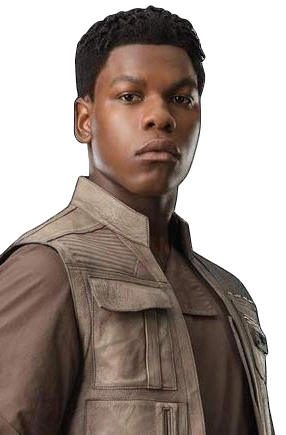Finn, interpretado por John Boyega, es un personaje fundamental en la trilogía de secuelas de Star Wars. Inicialmente, Finn es un soldado de asalto de la Primera Orden, desilusionado por la brutalidad de sus acciones. Su decisión de desertar lo lleva a unirse a la Resistencia, donde juega un papel vital en la lucha contra las fuerzas opresivas.
Desde "The Force Awakens", Finn se destaca por su valentía y su deseo de hacer lo correcto, a pesar de enfrentarse a un pasado como parte de la maquinaria militar de la Primera Orden. Su relación con Rey se desarrolla como una amistad profunda, y su historia se entrelaza con la búsqueda de identidad y redención.
En "The Last Jedi", Finn continúa su lucha contra la Primera Orden y forma una conexión especial con Rose Tico. Su participación en la misión para deshabilitar el rastreo de la flota de la Primera Orden demuestra su compromiso y habilidades.
En "The Rise of Skywalker", Finn sigue siendo un elemento esencial en la Resistencia, y su conexión con otros personajes, incluida Jannah, enfatiza la idea de que la lucha contra la opresión es una causa compartida por individuos de diversos orígenes.
Finn aporta una perspectiva única a la trilogía de secuelas al explorar temas de libre albedrío y resistencia contra la coerción. Su evolución desde un soldado programado para obedecer hasta un líder y defensor de la libertad lo destaca como un personaje complejo y valioso en el universo de Star Wars. Aunque la trilogía generó diversas reacciones, la contribución de Finn es innegable al representar la lucha interna y externa contra la tiranía.
Poe Dameron
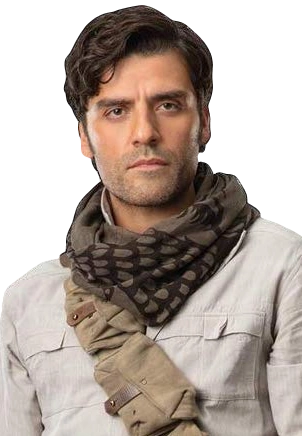Poe Dameron, interpretado por Oscar Isaac, es un personaje destacado en la trilogía de secuelas de Star Wars. Introducido en "The Force Awakens", Poe es el mejor piloto de la Resistencia, conocido por su habilidad excepcional en el Halcón Negro, su astromecánico BB-8 y su devoción a la causa de la libertad.
Desde su primera aparición, Poe personifica el espíritu intrépido y la lealtad a la Resistencia. Su conexión con Finn y su posterior amistad con Rey se convierten en elementos esenciales de su arco narrativo. La relación con Finn, en particular, se desarrolla como una amistad profunda y duradera.
A lo largo de la trilogía, Poe enfrenta desafíos de liderazgo y confronta su propio pasado, especialmente en "The Last Jedi", donde su relación con la Vicealmirante Holdo le enseña valiosas lecciones sobre liderazgo y sacrificio. Su evolución de un piloto intrépido a un líder respetado en "The Rise of Skywalker" refleja su crecimiento personal y su compromiso con la causa.
Poe Dameron aporta dinamismo a la trilogía de secuelas con su carisma, habilidades en combate y su papel como líder estratégico. Su participación en las misiones críticas de la Resistencia y su interacción con otros personajes consolidan su importancia en el conflicto contra la Primera Orden.
Aunque la trilogía generó diversas opiniones, el personaje de Poe Dameron se destaca como un elemento esencial y carismático en la nueva era de Star Wars. Su valentía, liderazgo y lealtad lo convierten en una adición significativa al rico tapiz de personajes de la saga.
Extra
C-3PO
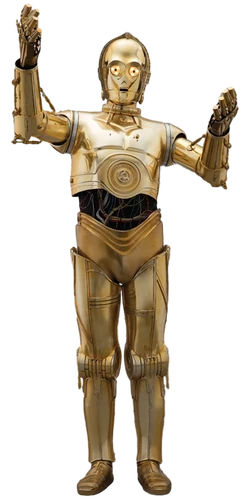C-3PO, el droide de protocolo dorado, es un personaje emblemático en la trilogía original de Star Wars. Interpretado por Anthony Daniels, C-3PO es conocido por su fluidez en varios idiomas y su propensión a preocuparse ante las situaciones peligrosas. Desde su primera aparición en "A New Hope", C-3PO es un testigo y participante en eventos clave de la saga.
A lo largo de las películas originales, C-3PO desempeña un papel cómico y a menudo sirve como alivio cómico. Su relación con R2-D2, otro droide icónico, agrega una dimensión especial a su personalidad, destacando la diversidad en la creación de los droides. La etiqueta y el protocolo de C-3PO contrastan con la astucia y la tenacidad de otros personajes, lo que proporciona un equilibrio en el grupo.
La trilogía original destaca la habilidad de C-3PO para adaptarse a diversas situaciones, desde el rescate de la princesa Leia hasta la batalla contra el Imperio. Su papel en la Rebelión y su relación con los héroes principales resaltan su importancia en la lucha contra las fuerzas oscuras.
R2-D2
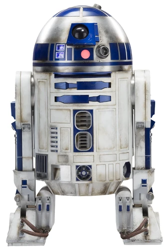R2-D2, el astromecánico astuto, es otro droide central en la trilogía original de Star Wars. Con su diseño distintivo y su habilidad para reparar naves espaciales, R2-D2 se convierte en un miembro vital del equipo rebelde. Su participación en la entrega de los planos de la Estrella de la Muerte en "A New Hope" establece su papel en eventos cruciales.
A lo largo de las películas originales, R2-D2 demuestra ser más que un simple droide mecánico. Su valentía en el campo de batalla, la capacidad para interactuar con computadoras y su conexión con la Fuerza lo convierten en un recurso valioso para la Alianza Rebelde. Su relación con C-3PO añade un toque de humor y camaradería al grupo de héroes.
En resumen, C-3PO y R2-D2 son droides icónicos en la trilogía original de Star Wars. A través de su humor, valentía y participación en eventos clave, estos personajes robóticos contribuyen significativamente a la riqueza y la diversidad de la saga galáctica.